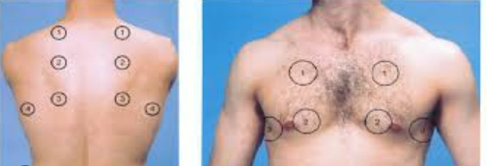
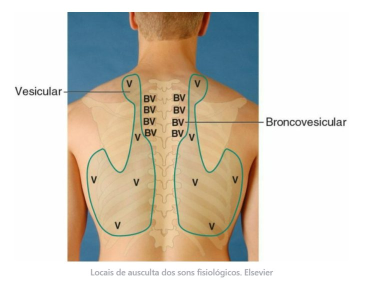
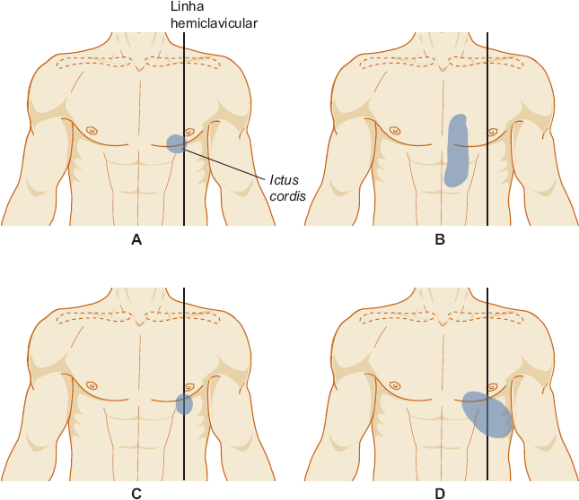
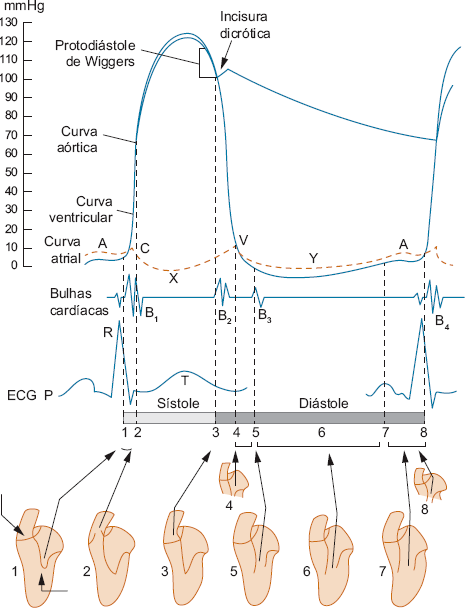
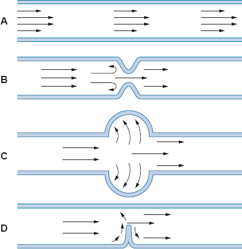
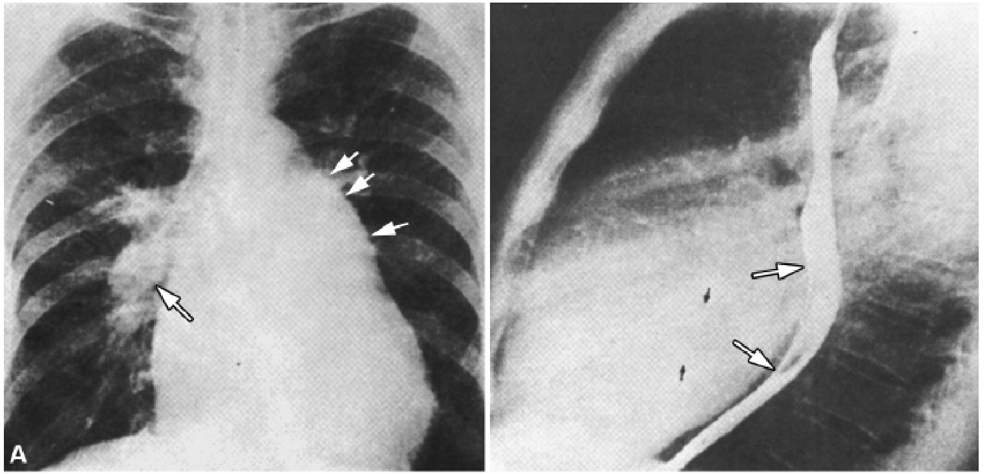
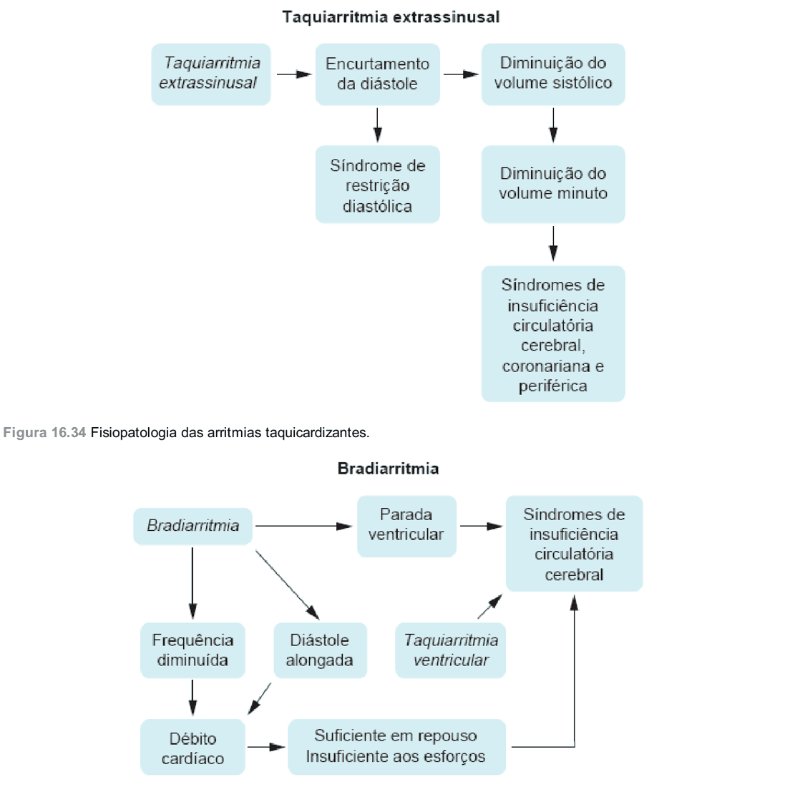

Como fazer o exame físico pulmonar e cardiovascular
A técnica de cada manobra, passo a passo, com a figura de referência ao lado. Para cada etapa: o que fazer, o achado normal e o sinal de alerta. A seção cardiovascular traz ainda bulhas e sopros com gráficos e áudio.
Conteúdo e figuras extraídos dos seus arquivos e do capítulo de exame do coração do Porto — Exame Clínico (8ª ed.).
Sistema respiratório
Exame físico pulmonar
Preparo
ANTES DE TOCAR
Ambiente e posicionamento
Apresente-se ao paciente e ao preceptor; higienize as mãos; peça permissão.
Ambiente silencioso e bem iluminado; exponha o tórax (auscultar sobre a roupa é falha técnica).
Paciente sentado. Oriente a respirar pela boca entreaberta, mais profundo que o normal e sem ruídos vocais.
Normal
Paciente colaborativo, tórax exposto, respiração ampla e silenciosa.
Alerta
Ruído ambiente e respiração superficial mascaram sons sutis.
01
INSPEÇÃO ESTÁTICA
Forma e simetria do tórax
Posicione-se à frente e nas laterais; observe a forma (diâmetro AP × látero-lateral), a simetria dos hemitórax, lesões de pele e circulação colateral.
Compare mentalmente com os padrões: normal (AP < LL) contra tonel, pectus, cifótico.
Cheque também a coluna (cifose/escoliose), que altera a mecânica ventilatória.
Normal
Tórax simétrico, normolíneo, diâmetro AP preservado (menor que o látero-lateral); sem deformidades, abaulamentos ou retrações; sem lesões cutâneas, circulação colateral, cianose ou baqueteamento digital.
Padrões de forma: normal, tonel, cifótico, pectus excavatum e carinatum.Deformidades da coluna: escoliose, cifose e lordose.
02
INSPEÇÃO DINÂMICA
Padrão respiratório em movimento
Conte a frequência discretamente por 1 minuto (sem avisar).
Avalie amplitude e simetria das expansões, tipo (toracoabdominal) e ritmo.
Procure sinais de esforço: tiragem, batimento de asa nasal e uso de musculatura acessória.
Normal
Eupneico, FR normal (12–20 irpm), ritmo regular sem pausas patológicas; amplitude preservada e simétrica; tipo respiratório toracoabdominal; sem tiragem, batimento de asa nasal ou uso de musculatura acessória.
Expansibilidade (dorso): mãos espalmadas sobre as costelas, polegares próximos à coluna, deixando uma pequena prega de pele solta entre eles. Divida em terços. Peça inspiração profunda e observe se os polegares se afastam simetricamente.
Complacência: uma mão à frente e a outra espalmada no espaço interescapulovertebral (terço médio), aplicando leve pressão.
FTV: use a face palmar dos dedos; peça “trinta e três”; percorra pontos simétricos comparando os hemitórax.
Normal
Expansibilidade preservada e simétrica bilateralmente; FTV presente e simétrico, sem áreas de aumento ou diminuição; sem dor à palpação da parede torácica nem contratura da musculatura paravertebral.
Manobra de expansibilidade: polegares junto à coluna, prega de pele solta.

Sequência de pontos simétricos do FTV (anterior e posterior).
04
PERCUSSÃO
Técnica dígito-digital e sonoridade
Técnica dígito-digital: apoie firme o dedo plexímetro sobre o espaço intercostal e percuta sua falange com a ponta do dedo plexor, usando o movimento do punho.
Percussão indireta e simétrica, em escada crânio-caudal, comparando hemitórax homólogos (6 regiões anteriores, 8 posteriores e laterais).
Use o ângulo de Louis (2ª costela) para contar os espaços.
Normal
Som claro pulmonar em ambos os hemitóraces, sem áreas de macicez, submacicez, hipersonoridade ou timpanismo; macicez fisiológica no precórdio e timpanismo no espaço de Traube (6º EIC esq.).
Sons à percussão: macicez do precórdio e timpanismo do espaço de Traube.
05
AUSCULTA
Sons respiratórios e ressonância vocal
Use o diafragma direto na pele; ausculte um ciclo completo (inspiração + expiração) em cada ponto.
Siga a sequência em “barra grega”, comparando sempre pontos simétricos.
Ressonância vocal: repita pedindo “trinta e três” falado e sussurrado — normal é abafado (eufonia).
Normal
Murmúrio vesicular universalmente audível e simétrico, sem ruídos adventícios (estertores, sibilos, roncos, estridor ou atrito pleural); transmissão da voz sem alterações (eufonia).
Sequência de percussão e ausculta em “barra grega”.

Topografia dos sons: vesicular (V), broncovesicular (BV) e brônquico (B).
REGISTRO — EXAME NORMAL
Laudo pulmonar padrão (paciente hígido)
Modelo de registro para transcrever quando o exame não revela alterações, seguindo a ordem inspeção → palpação → percussão → ausculta:
Inspeção estática: tórax simétrico, normolíneo, sem deformidades, abaulamentos ou retrações, diâmetro AP preservado; sem lesões cutâneas, circulação colateral, cianose ou baqueteamento; musculatura respiratória sem atrofias e sem uso de acessórios.
Inspeção dinâmica: FR normal, ritmo regular, eupneico, sem pausas patológicas; amplitude preservada e expansões simétricas; tipo toracoabdominal, sem sinais de fadiga.
Palpação: expansibilidade preservada e simétrica; FTV presente e simétrico, sem áreas de aumento ou diminuição; sem dor à palpação nem contratura paravertebral.
Percussão: som claro pulmonar em ambos os hemitóraces, sem macicez, submacicez, hipersonoridade ou timpanismo.
Ausculta: murmúrio vesicular universalmente audível e simétrico, sem ruídos adventícios (estertores, sibilos, roncos, estridor ou atrito pleural); transmissão da voz sem alterações.
Correlação clínica
Síndromes & doenças pulmonares
Síntese do capítulo Exame dos Pulmões do Porto — Exame Clínico (8ª ed.). Cada síndrome é definida por um padrão nos quatro métodos — Inspeção · Palpação/FTV · Percussão · Ausculta. A tabela ao final compara os padrões lado a lado.
Síndromes brônquicas
OBSTRUÇÃO
Asma brônquica
Afecção inflamatória crônica com hiper-reatividade das vias inferiores. Três mecanismos estreitam difusamente os pequenos brônquios: broncospasmo da musculatura lisa, edema de mucosa e hipersecreção — resultando em limitação expiratória do fluxo. Clínica: crises de dispneia predominantemente expiratória, aperto/constrição torácica, chieira e tosse que começa seca e torna-se produtiva (expectoração mucoide, espessa e aderente). Se a crise se prolonga por dias, refratária à terapêutica usual, chama-se mal asmático.
Inspeção: dispneia, tórax em posição de inspiração profunda, tiragem e uso de musculatura acessória.
Palpação (FTV): normal ou diminuído.
Percussão: normal ou hipersonoridade.
Ausculta: murmúrio vesicular diminuído com expiração prolongada e sibilos em ambos os campos; após a crise podem persistir estertores finos e sibilos esparsos.
INFECÇÃO / SECREÇÃO
Bronquites (aguda e crônica)
Aguda — geralmente viral (também micoplasma, clamídia ou bactéria); cursa com sintomas gerais, desconforto retroesternal, rouquidão e tosse seca que evolui para mucosa/mucopurulenta. À inspeção, palpação e percussão nada de anormal; à ausculta, estertores grossos bilaterais, com roncos e sibilos esparsos e inconstantes. Crônica — hipersecreção crônica de muco, ligada ao tabagismo e à DPOC; tosse com expectoração mucopurulenta por meses, em surtos. Achado principal: estertores grossos disseminados em ambos os hemitóraces, com roncos e sibilos frequentes.
DILATAÇÃO
Bronquiectasias
Dilatação permanente dos brônquios por destruição da parede e do tecido de sustentação, quase sempre sequela de infecções (coqueluche, sarampo, tuberculose, broncopneumonia, fibrose cística, discinesia ciliar). Clínica: tosse produtiva com expectoração mucopurulenta abundante (pior pela manhã), hemoptises frequentes, febre, suores noturnos, emagrecimento e hipocratismo digital.
Inspeção: expansibilidade normal ou diminuída.
Palpação (FTV): normal ou aumentado.
Percussão: normal; submacicez nas bases quando extensas.
Ausculta:estertores grossos localizados na área comprometida, com roncos e sibilos na mesma região.
COMPROMETIMENTO ALVEOLAR EM FOCOS
Broncopneumonia
Lesões brônquicas que se estendem aos alvéolos pelo processo inflamatório, sem formar áreas de condensação em bloco como na pneumonia lobar. Achado característico à ausculta: estertores finos nas regiões correspondentes aos focos. Se há bronquite associada, somam-se os sinais do comprometimento difuso dos brônquios.
Síndromes pulmonares (parênquima)
CONSOLIDAÇÃO
Consolidação pulmonar
Os espaços alveolares são ocupados por células e exsudato (parênquima “hepatizado”); o ar é substituído por meio sólido, que transmite melhor as vibrações. Principais causas: pneumonia, infarto pulmonar e tuberculose. Clínica: dispneia, tosse seca ou produtiva, expectoração por vezes hemoptoica; dor pleurítica se a pleura é acometida.
Inspeção: expansibilidade diminuída.
Palpação (FTV):aumentado — este é o achado-chave que separa consolidação de atelectasia.
Percussão: submacicez ou macicez.
Ausculta:respiração brônquica substituindo o murmúrio vesicular, broncofonia/egofonia/pectorilóquia e estertores finos.
COLAPSO POR OBSTRUÇÃO
Atelectasia
Elemento central: desaparecimento do ar dos alvéolos sem que o espaço seja ocupado por exsudato (colapso). Decorre de obstrução da via aérea (neoplasia, corpo estranho, rolha de muco) ou de compressão do pulmão. Distinção da consolidação: como o brônquio está obstruído, as vibrações não chegam à parede — o FTV fica diminuído ou abolido (na consolidação, aumentado).
Inspeção: retração do hemitórax e tiragem.
Palpação (FTV): expansibilidade diminuída e FTV diminuído ou abolido.
Percussão: submacicez ou macicez.
Ausculta: murmúrio vesicular abolido; se o brônquio permanece pérvio (atelectasia por compressão), respiração broncovesicular; ressonância vocal diminuída. No RX, desvio do mediastino para o lado da lesão.
HIPERAERAÇÃO
Enfisema pulmonar / DPOC
Aumento anormal dos espaços aéreos distais ao bronquíolo terminal com destruição dos septos alveolares → aprisionamento aéreo e limitação do fluxo. Coexiste frequentemente com a bronquite crônica (fator comum: tabagismo); juntos formam a DPOC. Clínica: dispneia progressiva (dos grandes esforços até o repouso) e expiração prolongada.
Inspeção:tórax em tonel e expansibilidade diminuída nos casos avançados.
Palpação (FTV): normal a diminuído.
Percussão:hipersonoridade (sonoridade normal no início, aumentando com a evolução).
Ausculta: murmúrio vesicular diminuído, fase expiratória prolongada e ressonância vocal diminuída.
CONGESTÃO VENOCAPILAR
Congestão passiva dos pulmões
Causa principal: insuficiência ventricular esquerda (também valvopatia mitral, glomerulonefrite, síndrome nefrótica). O líquido acumula-se no interstício, gerando dispneia de esforço, de decúbito e paroxística noturna, além de tosse seca e, às vezes, chieira.
Inspeção: expansibilidade normal.
Palpação (FTV): expansibilidade e FTV normais.
Percussão: submacicez nas bases pulmonares.
Ausculta:estertores finos nas bases (principal achado); prolongamento expiratório se houver broncospasmo (“asma cardíaca”); ressonância vocal normal.
CAVIDADE
Escavação / caverna pulmonar
Formação de cavidade por eliminação de parênquima necrótico — causa principal a tuberculose (também abscesso, neoplasia, micoses). Só é detectável ao exame físico quando periférica e com ≥ ~4 cm de diâmetro. Clínica: tosse seca e vômica.
Inspeção: expansibilidade diminuída na região afetada.
Palpação (FTV): expansibilidade diminuída e FTV aumentado.
Percussão: sonoridade normal ou som timpânico.
Ausculta: respiração broncovesicular/brônquica (cavernosa ou anfórica) no lugar do murmúrio vesicular; ressonância vocal aumentada ou pectorilóquia.
Síndromes pleurais
INFLAMAÇÃO PLEURAL
Pleurite
Seca aguda — sintoma central é a dor pleurítica em um hemitórax (piora com a respiração/tosse), acompanhada de tosse, dispneia e febre. Achado semiológico principal: atrito pleural (que desaparece quando surge derrame). Inspeção/palpação com expansibilidade e FTV diminuídos; percussão normal ou submacicez discreta. Crônica (paquipleurite) — espessamento dos folhetos; dor surda ou ausente e dispneia aos esforços; cursa com retração torácica, FTV diminuído, macicez/submacicez e murmúrio vesicular diminuído — padrão semelhante à atelectasia, diferenciável pela clínica e pela radiografia.
LÍQUIDO NO ESPAÇO PLEURAL
Derrame pleural
Acúmulo de líquido na cavidade pleural (pleurites, pneumonias, neoplasias, colagenoses, insuficiência renal, síndrome nefrótica e insuficiência cardíaca). Clínica: dor sem características pleuríticas, tosse seca e dispneia proporcional ao volume.
Inspeção: expansibilidade diminuída, por vezes com abaulamento do hemitórax.
Palpação (FTV): expansibilidade diminuída e FTV abolido.
Percussão:macicez, com ressonância skódica acima do nível do derrame.
Ausculta: murmúrio vesicular abolido; egofonia na borda superior do derrame.
AR NO ESPAÇO PLEURAL
Pneumotórax
Entrada de ar no espaço pleural (trauma, ruptura de bolha subpleural, tuberculose, neoplasias). Um mecanismo valvular pode gerar pneumotórax hipertensivo, com grande desvio do mediastino para o lado oposto — emergência. Clínica: dor no hemitórax, tosse seca e dispneia.
Inspeção: normal, ou abaulamento dos espaços intercostais quando o volume de ar é grande.
Palpação (FTV): expansibilidade e FTV diminuídos.
Percussão:hipersonoridade ou som timpânico — o dado que mais chama atenção.
Ausculta: murmúrio vesicular diminuído/abolido e ressonância vocal diminuída.
Insuficiência respiratória
FALHA DA TROCA GASOSA
Fisiopatologia e classificação
Síndrome de múltiplas causas em que a troca gasosa se torna inadequada. Depende de três mecanismos: ventilação (entrada/saída e distribuição do ar), difusão (passagem de O₂/CO₂ pela membrana alveolocapilar) e perfusão (fluxo sanguíneo pelos capilares alveolares). Classifica-se em ventilatória (falha de centros nervosos, musculatura, vias aéreas ou distensão do parênquima) e hipoxêmica / alveolocapilar (desproporção ventilação-perfusão ou redução da permeabilidade da membrana). Marcadores gasométricos: hipoxemia (PaO₂ ≤ 60 mmHg, SatO₂ ≤ 90%) e hipercapnia (PaCO₂ ≥ 50 mmHg). Pode ser aguda (ex.: SARA), crônica ou crônica reagudizada.
RECONHECIMENTO CLÍNICO
Sinais de hipoxemia e hipercapnia
A hipoxemia lembra a intoxicação alcoólica: nas fases iniciais, confusão mental, inquietação, agressividade, incoordenação, taquicardia e aumento da PA; nas avançadas, bradicardia e cianose. A hipercapnia lembra a anestesia geral: sonolência, desorientação, cefaleia, sudorese, rubor e hiperemia de mucosas, taquicardia e hipertensão; ao fundo de olho, ingurgitamento das veias da retina e edema de papila. O diagnóstico preciso, contudo, exige a gasometria.
Conteúdo sintetizado a partir do Porto — Exame Clínico, 8ª ed. (cap. Exame dos Pulmões) e padronizado conforme o roteiro de anamnese e exame físico.
Sistema cardiovascular
Exame físico cardiovascular
Preparo
SEQUÊNCIA E POSIÇÕES
Como conduzir e por que a percussão saiu de cena
A rotina é inspeção → palpação → ausculta. A percussão do precórdio foi abandonada: só detecta grandes cardiomegalias e foi superada por radiografia/ecocardiograma.
1) Sentado: extremidades, pulsos, PA e pescoço. 2) A 45° (Fowler): jugulares e inspeção do tórax. 3) Decúbito dorsal: precórdio, ausculta e MMII.
Posições extras conforme o alvo: sentado inclinado à frente realça a base (insuf. aórtica); decúbito lateral esquerdo realça a ponta (ruflar da estenose mitral, B3); de pé debruçado aproxima o coração da parede quando as bulhas estão hipofonéticas.
Higienize as mãos antes e depois, peça permissão e use EPI.
Normal
Exame fluido, com transições únicas de posição.
Alerta
Auscultar sobre a roupa e mudar o paciente de posição a todo momento comprometem o exame.
Projeção do coração e grandes vasos na parede torácica (o VD ocupa a face anterior; a ponta é do VE).
01
INSPEÇÃO + PALPAÇÃO DO ICTUS
Localizar e caracterizar o choque da ponta
Faça inspeção e palpação juntas. Procure abaulamentos em duas incidências: tangencial (de pé, à direita) e frontal (aos pés do paciente).
Localização por biotipo: mediolíneo → 5º EIC na linha hemiclavicular (LHC); brevilíneo → ~2 cm para fora e para cima, no 4º EIC; longilíneo → 5º EIC, 1–2 cm para dentro da LHC. Pode ser impalpável em enfisema, obesidade, muita musculatura, mamas volumosas e no idoso; em ~30% dos saudáveis não se detecta em decúbito dorsal.
Técnica: em decúbito dorsal, palpe com a face palmar de vários dedos. Se não achar, peça decúbito lateral esquerdo, expiração completa e apneia por alguns segundos (lembre que essa posição desloca o ictus para fora); afaste a mama se necessário.
Extensão: conte as polpas digitais para cobri-lo — 1 a 2 polpas (2–3 cm) é normal; ≥3 indica hipertrofia; toda a palma sugere grande dilatação. Mobilidade: marque o ponto em decúbito dorsal e nos dois decúbitos laterais (normal desloca 1–2 cm; não desloca na sínfise pericárdica).
Pesquise ainda: frêmito cardiovascular (“frêmito catário”, como o ronronar de um gato) nos 4 focos — caracterize localização, momento no ciclo (comparando com o pulso carotídeo) e intensidade em cruzes; e choque valvar palpável (bulha hiperfonética sentida como choque curto).
Normal
Precórdio sem abaulamentos, retrações ou deformidades. Ictus visível/palpável no 5º EIC esquerdo na LHC, localizado (~1–2 polpas digitais), normodinâmico e com mobilidade fisiológica; ausência de frêmitos cardiovasculares.
Alerta
Ictus difuso (≥3 polpas)/desviado para baixo e fora = HVE com dilatação · mais forte no mesmo lugar = HVE sem dilatação · levantamento em massa paraesternal e retração apical (báscula) = hipertrofia do VD · frêmito = sopro intenso.

Padrões do ictus (Porto, Fig. 16.24): A normal · B levantamento em massa na HVD · C HVE sem dilatação (mais forte) · D HVE com dilatação (desviado para baixo/fora e amplo).Técnica de palpação do ictus com a face palmar dos dedos.
02
PESCOÇO
Jugulares a 45° e pulso venoso
Cabeceira a 45°, cabeça levemente rodada para a esquerda, luz tangencial.
Observe a coluna de pulsação da jugular interna direita (alinhada com a VCS e o átrio direito); avalie ingurgitamento/turgência — só tem valor de hipertensão venosa se persiste na posição semissentada/sentada.
Diferencie do pulso carotídeo (palpável e único) e reconheça as ondas venosas (a, c, v) e as descidas (x, y).
Normal
Veias jugulares sem ingurgitamento patológico, sem turgência em posição semissentada a 45°, com pulsações venosas fisiológicas.
Alerta
Turgência que persiste sentado = hipertensão venosa (IC direita) · refluxo hepatojugular positivo · onda ‘a’ ausente = fibrilação atrial · onda ‘v’ ↑ = insuf. tricúspide.
03
PALPAÇÃO PERIFÉRICA
Pulsos, temperatura, enchimento e PA
Toque as extremidades: temperatura e enchimento capilar (normal < 2–3 s).
Palpe os pulsos bilaterais (radial, braquial, carótida, femoral, poplíteo, tibial posterior, pedioso). Avalie parede arterial, frequência (1 min), ritmo, amplitude, tensão, tipo de onda e simetria; pesquise déficit de pulso (FC > pulso radial).
PA: palpatória (estime a PAS) e depois auscultatória — insufle 20–30 mmHg acima e desinsufle 2–4 mmHg/s.
Normal
PA dentro dos limites da normalidade (método auscultatório); temperatura das extremidades preservada e enchimento capilar < 2 s. Pulsos radial, braquial, carotídeo, femoral, poplíteo, tibial posterior e pedioso presentes, cheios e simétricos (2+/4+), parede arterial elástica, sem déficit de pulso. Onda de pulso: FC coincidente com a cardíaca, ritmo regular, amplitude mediana e tensão normais.
Alerta
Extremidades frias = baixo débito · parvus/filiforme = choque · alternante = disfunção do VE · paradoxal = tamponamento · déficit de pulso = fibrilação atrial.
04
AUSCULTA — REGRAS E FOCOS
Onde ouvir, com qual receptor e em que ordem
Receptor: use o diafragma na rotina (alta frequência) e a campânula apenas apoiada (baixa frequência: B3, B4, ruflar da estenose mitral). Comprimir a campânula a transforma em diafragma. Sempre na pele, nunca sobre a roupa.
Focos: Mitral (5º EIC esq. na LHC = ictus) · Pulmonar (2º EIC esq.) · Aórtico (2º EIC dir.) · Aórtico acessório (3º EIC esq., junto ao esterno) · Tricúspide (base do apêndice xifoide). Os focos são pontos de referência e não coincidem com a projeção das valvas (concentrada no 1/3 inferior do esterno) — ausculte todo o precórdio.
Respiração: sons e sopros do coração direito aumentam na inspiração (base da manobra de Rivero-Carvallo).
Sistematize: reconheça ritmo e FC pela B1/B2 → identifique arritmia → se houver B3, procure ritmo de galope → analise as bulhas → identifique cliques, estalidos, sopros e atrito → relacione com lesões.
Normal
Focos mitral, tricúspide, pulmonar e aórtico avaliados. Bulhas normofonéticas em 2 tempos (B1 e B2), ritmo cardíaco regular em 2 tempos, sem desdobramentos patológicos; ausência de B3 e B4, sopros, estalidos, cliques ou atrito pericárdico; normocárdico (60–100 bpm). O desdobramento fisiológico de B2 na inspiração é normal.
Alerta
Arritmia (irregular) → FA/extrassístoles · taqui >100 / bradi <60 · qualquer sopro, B3/B4, clique, estalido ou atrito merece caracterização.
Focos de ausculta na parede torácica.Ciclo cardíaco (Porto, Fig. 16.29): pressões, bulhas B1–B4, ECG e abertura/fechamento valvar ao longo de sístole e diástole.
05
MEMBROS INFERIORES
Edema, perfusão e pulso pedioso
Inspecione edema, varizes e coloração.
Palpe o pulso pedioso e a temperatura periférica.
Pesquise o cacifo pressionando a região maleolar/tibial contra o osso; gradue em cruzes (+ a ++++).
Normal
Ausência de edema em membros inferiores; enchimento capilar < 2 s; extremidades com temperatura preservada e pulso pedioso presente e simétrico.
Alerta
Edema mole, inelástico, indolor, vespertino, bilateral = IC direita · assimétrico = causa vascular local.
Classificação do edema por cacifo em cruzes.
REGISTRO — EXAME NORMAL
Laudo cardiovascular padrão (paciente hígido)
Modelo de registro para transcrever quando o exame não revela alterações, na ordem inspeção → palpação → ausculta — redação do Roteiro de Anamnese e Exame Físico:
Inspeção: precórdio sem abaulamentos, retrações ou deformidades visíveis; ictus cordis visível discretamente no 5º espaço intercostal esquerdo, na linha hemiclavicular; ausência de cianose periférica, edema de membros inferiores, circulação colateral torácica ou varizes aparentes; veias jugulares sem ingurgitamento patológico, sem turgência em posição semissentada a 45°, com pulsações venosas fisiológicas.
Palpação: pressão arterial dentro da normalidade pelo método auscultatório; temperatura das extremidades preservada; enchimento capilar inferior a 2 segundos; ausência de edema em membros inferiores; ictus cordis palpável no 5º espaço intercostal esquerdo na linha hemiclavicular, localizado, ocupando ~1 a 2 polpas digitais, normodinâmico; ausência de frêmitos cardiovasculares; pulsos radial, braquial, carotídeo, femoral, poplíteo, tibial posterior e pedioso presentes, cheios, simétricos bilateralmente, de amplitude normal (2+/4+); parede arterial com elasticidade preservada, sem endurecimento ou tortuosidades; ausência de déficit de pulso.
Pulsos arteriais: frequência coincidente com a cardíaca, ritmo regular, amplitude mediana, tensão normal, onda de pulso sem alterações e simetria preservada entre os pulsos bilaterais.
Ausculta: focos mitral, tricúspide, pulmonar e aórtico avaliados; bulhas cardíacas normofonéticas em dois tempos (B1 e B2), ritmo cardíaco regular em dois tempos, sem desdobramentos patológicos; ausência de terceira e quarta bulhas (B3 e B4); ausência de sopros, estalidos, cliques ou atrito pericárdico; normocárdico.
Conclusão: aparelho cardiovascular sem alterações ao exame físico, pressão arterial nos limites da normalidade, pulsos periféricos preservados, sem sinais de insuficiência cardíaca congestiva ou comprometimento hemodinâmico.
Ausculta · achados anormais
Bulhas e sopros — gráficos e sons
Fonocardiograma esquemático + explicação + áudio real para treinar o ouvido. Nos gráficos, a faixa cinza é a sístole; barras escuras são B1/B2, barras vinho são bulhas acessórias e as áreas vinho são os sopros.
Ciclo cardíaco e bulhas normais
MECANISMO
B1 e B2 — como se formam
B1 = fechamento das valvas atrioventriculares (mitral antes da tricúspide), no início da sístole; coincide com o ictus e com o pulso carotídeo, tem timbre grave e é mais intensa no foco mitral — imita-se por “TUM”. B2 = fechamento das semilunares (aórtica antes da pulmonar), início da diástole; timbre mais agudo e seco, mais intensa nos focos da base — “TÁ”. A sequência normal é TUM-TÁ, TUM-TÁ. Em ~50% das pessoas saudáveis a B1 é levemente desdobrada (sem relação com a respiração).

Correlação de pressões, ECG e bulhas ao longo do ciclo (Porto, Fig. 16.29).
Referência
B1 e B2 — ritmo normal (2 tempos)
Padrão de referência: “TUM-TÁ”, com o pequeno silêncio (sístole) menor que o grande silêncio (diástole). Compare todos os achados anormais a este.
B1 · B2 normofonéticas
Desdobramento da 2ª bulha
FOCO PULMONAR
Fisiológico e patológicos
Estuda-se no foco pulmonar, onde se ouvem A2 e P2. Fisiológico/inspiratório: na inspiração, o maior retorno ao VD atrasa P2 e separa os componentes (“TUM-TLÁ”), voltando a ser único na expiração. Patológicos: constante e variável (bloqueio de ramo direito), fixo (comunicação interatrial — não varia com a respiração), invertido/paradoxal (bloqueio de ramo esquerdo — aparece na expiração) e o da estenose pulmonar/aórtica (prolongamento da sístole ventricular).
Desdobramentos de B2 na área pulmonar e suas causas (Porto, Fig. 16.47).
Ritmos tríplices e galope — bulhas acessórias
CONCEITO
B3, B4 e ritmo de galope
Um 3º ruído diastólico transforma o ritmo binário em tríplice. A B3 (protodiastólica) nasce do enchimento ventricular rápido — normal em crianças/jovens/gestantes; patológica em corações dilatados/mais complacentes (“mais moles”: insuf. mitral, miocardiopatia, shunts E→D). A B4 (pré-sistólica) vem da contração atrial contra um ventrículo rígido (“mais duro”: HAS com hipertrofia, isquemia, estenose aórtica). Quando a bulha acessória é patológica e ganha cadência de galope de cavalo (PÁ-TÁ-TÁ), fala-se em ritmo de galope — melhor com a campânula, na ponta/borda esternal esquerda, em decúbito lateral esquerdo; é “um pedido de socorro do coração”.
Bulhas acessórias
B3 — galope ventricular (protodiastólico)
Logo após B2, no enchimento rápido; cadência “TUM-TÁ-TU” (Ken-tu-cky). Galope ventricular = B3 patológica → disfunção sistólica / sobrecarga de volume. Campânula, foco mitral, decúbito lateral esquerdo; pode acentuar na inspiração se for de origem direita.
B3 isolada (galope)
Ritmo com B3
B3 na inspiração
Bulhas acessórias
B4 — galope atrial (pré-sistólico)
No fim da diástole, antes de B1; cadência “TÁ-TUM-TÁ” (Ten-nes-see). B4 patológica → ventrículo rígido (HAS com hipertrofia, estenose aórtica, isquemia). Campânula, foco mitral.
B4 isolada (galope)
Ritmo com B4
Bulhas acessórias
Galope de soma (B3 + B4)
Com taquicardia a diástole encurta e B3+B4 se fundem num único som mesodiastólico — indica comprometimento ventricular importante.
Galope de soma (B3+B4)
Alterações de intensidade das bulhas
INTENSIDADE (FOCOS MITRAL/TRICÚSPIDE)
B1 — o que a torna forte ou fraca
O fator principal é a posição das valvas AV no início do fechamento (relaciona-se ao intervalo PR): PR curto, taquicardia, hipertireoidismo, extrassístoles e estenose mitral → B1 hiperfonética (na EM, também metálica e seca). Ficam hipofonéticas com PR longo, miocardite/IAM/insuficiência cardíaca (subida lenta da pressão) e calcificação valvar intensa. Na fibrilação atrial a intensidade varia de sístole para sístole (“delirium cordis”). Tórax delgado → mais intensa; obesidade, enfisema e derrame → mais fraca. Um sopro sistólico de regurgitação pode mascarar B1.
INTENSIDADE (FOCOS DA BASE)
B2 — intensidade nas bases
Analise nos focos aórtico e pulmonar. Hiperfonese de A2 na hipertensão arterial sistêmica; hiperfonese de P2 na hipertensão pulmonar. Valvas calcificadas movem-se pouco → som fraco (na estenose aórtica calcificada, A2 pode ficar inaudível). Na criança, B2 é mais intensa no foco pulmonar; no adulto/idoso, no aórtico.
Sopros — mecanismo e semiologia
MECANISMO
Como se formam
O fluxo laminar normal não faz ruído; o sopro surge quando há turbulência: aumento da velocidade (exercício, anemia, febre, hipertireoidismo), queda da viscosidade, passagem por zona estreitada (ou por orifício normal com hiperfluxo — estenose “relativa”), por zona dilatada ou por membrana de borda livre. Em geral vários mecanismos se somam.

Mecanismos do sopro (Porto, Fig. 16.48): A laminar (sem sopro) · B estenose · C dilatação · D obstáculo intraluminar.
SEMIOLOGIA
Os 7 parâmetros para descrever um sopro
1. Situação no ciclo (o passo mais importante) — palpe a carótida junto com a ausculta para separar sístole de diástole: sistólico, diastólico ou sistodiastólico/contínuo. 2. Localização (área de maior intensidade). 3. Irradiação — estenose aórtica → pescoço; insuf. mitral → axila. 4. Intensidade em cruzes: +/4 (débil) · ++/4 (moderado) · +++/4 (intenso) · ++++/4 (muito intenso, com frêmito). 5. Timbre e tom — suave, rude, granular, musical, aspirativo, em jato de vapor, piante, ruflar. 6. Respiração/posição/exercício. 7. Relação com bulhas e frêmito.
SÍSTOLE
Sopros sistólicos: ejeção × regurgitação
Ejeção (estenose aórtica/pulmonar): começa após B1 (contração isovolumétrica), é crescendo-decrescendo e termina antes de B2. Regurgitação (insuf. mitral/tricúspide, CIV): holossistólico em platô, começa junto com B1, recobrindo-a, e vai até B2.
Sopros sistólicos (Porto, Fig. 16.49): A ejeção (crescendo-decrescendo) na estenose aórtica · B regurgitação (platô/decrescendo) na insuf. mitral.
Sopros sistólicos
Ejetivo — estenose das semilunares (aórtica/pulmonar)
Mesossistólico em crescendo-decrescendo (diamante). Estenose aórtica: foco aórtico, rude/granular, irradia para as carótidas, A2 diminuída, pulso parvus et tardus.
Sopro sistólico ejetivo
Sopros sistólicos
Regurgitação — insuficiência mitral
Holossistólico em platô, mascara B1; foco mitral com irradiação para a axila. Se houver hipertensão pulmonar, P2 hiperfonética.
Sopro sistólico — insuf. mitral
Sopros diastólicos
Insuficiência das semilunares (aórtica/pulmonar)
Protodiastólico em decrescendo, aspirativo, logo após B2 — “TUM-TÁÁÁ”. Insuf. aórtica: borda esternal esq., melhor sentado, inclinado à frente e em apneia expiratória.
Sopro diastólico — insuf. semilunar
Sopros diastólicos
Estenose das valvas AV (mitral/tricúspide)
Ruflar mesodiastólico grave com reforço pré-sistólico, iniciado por estalido de abertura. Estenose mitral: campânula, foco mitral, decúbito lateral esquerdo; o exercício intensifica.
Sopro diastólico — estenose AV
DIFERENCIAR IT de IM
Manobra de Rivero-Carvallo
Com o receptor no foco tricúspide, peça uma inspiração profunda: se o sopro aumenta, é da tricúspide (manobra positiva); se não muda ou diminui, é propagação de um sopro mitral. Baseia-se no maior afluxo ao coração direito na inspiração.
Cliques, estalidos, atrito e rumor venoso
RUÍDOS EXTRAS
Cliques e estalidos
Estalido de abertura mitral: agudo, seco, curto, logo após B2 — sinal mais indicativo de estenose mitral (some com calcificação intensa/HP grave); diferencia-se de B3 (grave, só na ponta) e do desdobramento de B2 (mais tardio, no foco pulmonar). Estalidos protossistólicos (ruídos de ejeção) aórtico/pulmonar: agudos, na base. Clique meso/telessistólico: sugere prolapso da valva mitral, mesmo sem sopro.
DIFERENCIAR DE SOPROS
Atrito pericárdico e rumor venoso
Atrito pericárdico (pericardite fibrinosa): som de couro novo, sisto-diastólico, não coincide exatamente com as fases, muda de qualidade/intensidade de hora em hora e é bem localizado (ponta ↔ borda esternal esq.). Rumor/ruído venoso: contínuo, grave, no pescoço acima da clavícula direita; some ao deitar, comprimir a jugular ou rodar o pescoço — sem significado clínico (diferenciar do sopro contínuo da persistência do canal arterial).
QUANDO NÃO É DOENÇA
Sopros inocentes
Comuns em crianças. Características: sem frêmito, nunca diastólicos, suaves (+ a ++), proto/mesossistólicos (nunca holossistólicos), sem alteração das bulhas e com irradiação restrita. Ainda assim, o rótulo de “inocente” só se firma após avaliação clínica completa.
Resumo auscultatório das valvopatias
Lesão
Momento
Sopro
Foco / irradiação
Outros achados
Estenose mitral
Diastólico
Ruflar mesodiastólico + reforço pré-sistólico
Mitral (campânula, DLE)
B1 hiperfonética/metálica, hiperfonese de P2, estalido de abertura; exercício intensifica
Insuficiência mitral
Sistólico
Regurgitação (holossistólico, mascara B1)
Mitral → axila
P2 hiperfonética se HP; pode haver B3
Estenose aórtica
Sistólico
Ejeção (crescendo-decrescendo), rude/granular
Aórtico → carótidas
A2 diminuída/ausente; ictus intenso; melhor sentado
Áudios fornecidos pelo usuário, para uso didático. Fonocardiogramas são esquemáticos (fora de escala temporal). Texto sintetizado a partir do Porto — Exame Clínico, 8ª ed.
Correlação clínica
Cardiopatias
As condições abaixo são as citadas no capítulo de exame do coração do Porto — Exame Clínico (8ª ed.). O foco é o pedido: a fisiopatologia básica e, principalmente, os achados clínicos (semiologia) e a semiotécnica para reconhecê-los.
Insuficiência cardíaca (IC)
POR QUE OS SINAIS APARECEM
Fisiopatologia — o essencial
A IC começa quando há desproporção entre a carga hemodinâmica e a capacidade do miocárdio. O organismo compensa com taquicardia, hipertrofia das fibras, ativação do sistema renina-angiotensina-aldosterona e hiperatividade adrenérgica; a persistência do agressor leva ao remodelamento miocárdico. Quando a compensação é superada, instala-se a síndrome. O coração tolera melhor sobrecarga de volume (ex.: insuf. aórtica, que fica anos assintomática) do que de pressão (ex.: estenose aórtica, que descompensa mais cedo); sobrecargas agudas (ruptura de cordoalha no IAM) descompensam rápido. Classifica-se em ICFEr (fração de ejeção reduzida, disfunção sistólica) e ICFEp (fração preservada, disfunção diastólica — ~30% dos casos, mais em mulheres e idosos).
Quadro clínico da IC (Porto, Fig. 16.52): sinais da insuf. ventricular esquerda × direita e os sinais atribuíveis diretamente ao coração.
SEMIOLOGIA — COMUNS ÀS DUAS
Sinais atribuíveis ao coração
Taquicardia (mecanismo compensador mais elementar), ritmo de galope (B3 patológica — surge cedo e tem grande valor diagnóstico), pulso alternante (batimento forte alternando com fraco — disfunção do VE), convergência pressórica (queda da PA sistólica + aumento da diastólica pela vasoconstrição), hiperfonese de P2 (hipertensão pulmonar), sopros sistólicos, cardiomegalia (ictus difuso/desviado), arritmias e intolerância aos esforços. A hiperatividade adrenérgica se traduz por cianose e frialdade das extremidades, sudorese e aumento da PA diastólica.
SEMIOLOGIA — CONGESTÃO PULMONAR
Insuficiência ventricular esquerda
Origina-se da congestão venocapilar pulmonar. A dispneia é a queixa central, nas formas: de esforço (progressiva, aos grandes→pequenos esforços), de decúbito/ortopneia (obriga a dormir com vários travesseiros), paroxística noturna (desperta o paciente após horas de sono, com falta de ar intensa) e de Cheyne-Stokes (periódica, na IC grave). Acompanha-se de tosse seca (após esforço ou ao deitar), expectoração hemoptoica (congestão intensa/edema agudo), estertores finos nas bases (sinal mais precoce de congestão) e, por broncospasmo, asma cardíaca (sibilos e expiração prolongada).
SEMIOLOGIA — CONGESTÃO SISTÊMICA
Insuficiência ventricular direita
Denominador comum: hipertensão venosa + retenção de sódio e água. Achados: ingurgitamento/turgência jugular (só tem valor se persiste sentado), hepatomegalia congestiva (superfície lisa, borda fina, dolorosa), refluxo hepatojugular, edema (mole, inelástico, indolor, vespertino, começa nos MMII / região pré-sacra no acamado, podendo chegar à anasarca), derrames cavitários (hidrotórax, ascite, derrame pericárdico) e cianose periférica. A repercussão subjetiva é menor que na IVE: cansaço, dor no hipocôndrio direito (distensão da cápsula de Glisson), anorexia, oligúria.
COMO PESQUISAR
Semiotécnica dirigida à IC
Ritmo de galope: campânula apoiada com suavidade na ponta/borda esternal esquerda, em decúbito lateral esquerdo (não comprimir). Pulso alternante: perceptível ao palpar o pulso radial ou desinsuflando lentamente o manguito. Turgência jugular: avalie a 45° e confirme na posição sentada. Refluxo hepatojugular: comprima o hipocôndrio direito por ~10 s e observe o aumento sustentado da coluna jugular. Estertores: ausculte as bases; edema: cacifo na região maleolar/tibial, graduando em cruzes.
A base é o desequilíbrio entre oferta e demanda de oxigênio pelo miocárdio, quase sempre por aterosclerose coronariana. Na doença crônica estável, uma placa estável limita o fluxo sob esforço (angina estável). Na SCA, ocorre ruptura/erosão da placa com formação de trombo: se a oclusão é parcial/transitória → angina instável ou infarto sem supra de ST (IAMSSST); se é total e persistente → infarto com supra de ST (IAMCSST), com necrose transmural. A isquemia reduz a complacência e a contratilidade ventricular — o que explica os achados de ausculta.
SEMIOLOGIA — A DOR É O EIXO
Achados clínicos
A manifestação-chave é a dor anginosa: retroesternal, em aperto/constrição/peso (o paciente costuma fechar a mão sobre o peito — sinal de Levine), com irradiação para membro superior esquerdo, mandíbula, pescoço ou dorso. Na angina estável dura poucos minutos e alivia com repouso/nitrato; na SCA é mais intensa, prolongada (>20 min) e/ou em repouso, acompanhada de sudorese fria, náuseas, dispneia e sensação de morte iminente. Atenção aos equivalentes anginosos (dispneia, mal-estar, dor epigástrica), mais comuns em idosos, diabéticos e mulheres. O exame físico do coração pode ser normal.
SEMIOTÉCNICA — O QUE PROCURAR
Achados ao exame do coração
Quando presentes, os achados refletem a disfunção isquêmica: B4 (isquemia reduz a complacência → ventrículo “duro”), eventual B3 (disfunção sistólica), hipofonese de B1 e B2, sopro sistólico de regurgitação mitral transitório (disfunção/ruptura de músculo papilar) e arritmias. Um atrito pericárdico sugere pericardite reacional pós-infarto. Pesquise ativamente sinais de IC e de baixo débito/choque: taquicardia, ritmo de galope, estertores, hipotensão, extremidades frias e sudorese. Semiotécnica da dor: caracterize localização, tipo, irradiação, início/duração, fatores de melhora e piora e sintomas associados; palpe pulsos e afira a PA nos dois braços.
Valvopatias adquiridas
DIASTÓLICO · FOCO MITRAL
Estenose mitral
Estreitamento do orifício mitral por moléstia reumática (causa clássica), valva bicúspide congênita ou degeneração senil com calcificação. Na diástole, o sangue tem dificuldade de fluir do átrio para o ventrículo esquerdo, elevando a pressão no AE e retrogradamente na pequena circulação.
Fisiopatologia: sobrecarga do átrio esquerdo → hipertensão venocapilar pulmonar → hipertensão da artéria pulmonar; é causa frequente de fibrilação atrial e de trombose intra-atrial.
Ausculta:B1 hiperfonética, com tom agudo e timbre metálico/seco (folhetos endurecidos); hiperfonese de P2 (hipertensão pulmonar); estalido de abertura da mitral (agudo, logo após B2); ruflar mesodiastólico com reforço pré-sistólico, de baixa frequência, restrito à área mitral.
Chave / manobra: melhor audível com a campânula, em decúbito lateral esquerdo; o exercício físico intensifica o ruflar. Na calcificação intensa ou na HP muito grave, o estalido de abertura desaparece.

Estenose mitral — silhueta radiológica (Porto, Fig. 16.50A): em PA, arco médio abaulado (dilatação da a. pulmonar e da auriculeta esquerda); no perfil, compressão esofágica pelo AE dilatado (setas).
SISTÓLICO · FOCO MITRAL → AXILA
Insuficiência mitral
Os folhetos não se fecham adequadamente na sístole, permitindo refluxo de sangue do ventrículo para o átrio esquerdo. Pode ser orgânica (moléstia reumática, prolapso mitral, endocardite infecciosa) ou funcional (cardiomiopatias, miocardites, infarto — sem lesão das valvas).
Ausculta:sopro sistólico de regurgitação (holossistólico) que mascara/recobre a B1, localizado na área mitral e com irradiação para a axila; se há hipertensão pulmonar, P2 torna-se hiperfonética; pode haver B3.
Chave: intensidade (+ a + + + +) guarda relação com a magnitude do refluxo; o timbre é variável — ora suave, ora rude, às vezes musical.
SISTÓLICO · FOCO AÓRTICO → CARÓTIDAS
Estenose aórtica
Dificuldade de esvaziamento do ventrículo esquerdo pela valva estreitada. Em jovens/adultos a causa mais comum é a moléstia reumática (ou valva bicúspide congênita); no idoso, a degeneração senil calcificada.
Ausculta:sopro sistólico de ejeção (crescendo-decrescendo), rude/granular, máximo na área aórtica e irradiado para o pescoço/carótidas (acompanha a corrente sanguínea); a A2 fica diminuída ou inaudível na forma calcificada.
Chave / manobra: mais audível com o paciente sentado; frêmito frequente; ictus intenso/sustentado (HVE). Ao pulso: pulso anacrótico/parvus e atraso entre o ictus e o pulso carotídeo.
DIASTÓLICO · FOCO AÓRTICO / 3º EIC ESQ.
Insuficiência aórtica
Incapacidade de fechamento das sigmoides aórticas → refluxo de sangue para o VE durante a diástole. Causas: moléstia reumática, endocardite infecciosa, aortite luética, degeneração senil e dissecção aórtica.
Ausculta:sopro diastólico aspirativo, de alta frequência, em decrescendo, iniciando logo após a B2; localiza-se na área aórtica ou no 3º EIC esquerdo junto à borda esternal, irradiando para baixo (endoápex/área mitral).
Chave / manobra: mais audível sentado, inclinado para a frente, em apneia expiratória. Exemplo clássico de sobrecarga de volume: ictus extenso e desviado para baixo e para fora (HVE com dilatação), pulso célere e pulsações visíveis na fúrcula.
SISTÓLICO · FOCO TRICÚSPIDE
Insuficiência tricúspide
Defeito quase sempre funcional, secundário à dilatação do anel (é mais comum que a forma orgânica); quando orgânica, a causa costuma ser reumática. Há refluxo do VD para o AD na sístole.
Ausculta: sopro sistólico de regurgitação na área tricúspide, com irradiação “em raio de roda” — pode atingir a área mitral e simular insuficiência mitral.
Chave / manobra:manobra de Rivero-Carvallo positiva (o sopro aumenta na inspiração profunda) — é o que o diferencia da insuficiência mitral; no pulso venoso, onda “v” aumentada.
SISTÓLICO · FOCO PULMONAR
Estenose pulmonar
Na maioria dos casos é de origem congênita, isolada ou como parte de anomalias complexas — sobretudo a tetralogia de Fallot (estenose pulmonar + CIV + dextroposição da aorta + hipertrofia do VD).
Ausculta: os dados mais expressivos estão na área pulmonar: quanto mais grave, mais hipofonética e desdobrada a B2 (com diminuição do componente pulmonar); estalido protossistólico (dilatação pós-estenótica do tronco pulmonar) que inicia um sopro sistólico crescendo-decrescendo, geralmente com frêmito.
Chave: o desdobramento amplo de B2 decorre do prolongamento do período ejetivo do VD.
DIASTÓLICO · FOCO PULMONAR / BEE
Insuficiência pulmonar
Causa mais comum: dilatação do anel valvar por hipertensão pulmonar (de qualquer etiologia) ou dilatação da artéria pulmonar (idiopática ou por doença do tecido conjuntivo, como a síndrome de Marfan); menos frequentemente por lesão das próprias valvas. Há refluxo para o VD.
Ausculta: sopro diastólico audível após a B2, na área pulmonar e na borda esternal esquerda até a área tricúspide.
Chave: principal diagnóstico diferencial é a insuficiência aórtica, também audível nessa região.
Anomalias congênitas & sopros inocentes
SISTÓLICO · FOCO PULMONAR
Comunicação interatrial (CIA)
Defeito congênito muito frequente. O sopro não é gerado pela passagem de sangue pelo orifício, mas por uma estenose pulmonar “relativa”, decorrente do hiperfluxo através da valva pulmonar.
Ausculta:sopro sistólico de ejeção suave na área pulmonar, com pequena propagação para o ombro esquerdo.
Elemento-chave: mais importante que o sopro é sua associação ao desdobramento constante e fixo da 2ª bulha na área pulmonar (não varia com a respiração porque os átrios estão intercomunicados).
SISTÓLICO · ENDOÁPEX/MESOCÁRDIO
Comunicação interventricular (CIV)
Orifício entre os ventrículos; anomalia congênita comum. A passagem de sangue pela comunicação gera turbilhonamento sistólico.
Ausculta:sopro sistólico de regurgitação predominante no endoápex/mesocárdio, irradiando em faixa transversal (da área mitral à tricúspide), qualidade quase sempre “em jato de vapor”; associa-se a hiperfonese de P2 (aumento da pressão pulmonar).
Detalhe hemodinâmico: quanto menor o defeito, mais intenso o sopro (maior velocidade do fluxo); nas comunicações amplas o sopro é mais débil.
SISTODIASTÓLICO · INFRACLAVICULAR ESQ.
Persistência do canal arterial (PCA)
Persistência do canal arterial após o nascimento. Estabelece comunicação aorta ↔ artéria pulmonar durante todo o ciclo.
Ausculta:sopro contínuo “em maquinaria”, localizado na área infraclavicular esquerda; o componente sistólico é mais intenso e rude; P2 hiperfonética indica hipertensão no circuito pulmonar.
Diferencial: distinguir do rumor venoso (sisto-diastólico, cervical, que desaparece ao deitar ou ao comprimir a jugular).
BENIGNO · SEM LESÃO ESTRUTURAL
Sopros inocentes
Sopros em pacientes — na maioria crianças — sem qualquer alteração das estruturas do coração ou dos grandes vasos. A tarefa do examinador é diferenciá-los dos patológicos.
Características:nunca são diastólicos e nunca são holossistólicos; quase sempre suaves (+ a + +), proto ou mesossistólicos; não se acompanham de frêmito nem de alterações das bulhas; irradiação muito restrita e nunca se propagam ao dorso.
Cautela: as características semiológicas não bastam — o diagnóstico de sopro inocente só se firma após exame clínico completo e exames complementares adequados.
Outras alterações e doenças citadas
RITMO · RECONHECIMENTO CLÍNICO
Arritmias
O ECG confirma, mas o exame físico (ritmo, frequência, intensidade da B1, manobras vagais, onda “a” do pulso venoso e efeito da respiração/exercício) permite reconhecer e diferenciar os principais tipos. O débito cardíaco cai sobretudo nas taquiarritmias extrassinusais e nas bradiarritmias (FC < 40 ou > 160 bpm rompe a compensação).
Sinusais:taquicardia (>100 bpm, ritmo pouco variável, B1 invariável, manobras vagais positivas), bradicardia (<60 bpm) e arritmia sinusal (varia com a respiração: acelera na inspiração; fisiológica em crianças/jovens).
Extrassístoles: batimento prematuro seguido de pausa compensadora; as muito precoces são ineficazes (só B1, sem onda de pulso). Podem ser bigeminadas, trigeminadas ou em salva.
Taquicardia paroxística: foco ectópico a 150–250 bpm, com início e término súbitos; a supraventricular responde às manobras vagais, a ventricular não.
Fibrilação atrial: ritmo totalmente irregular, intensidade de B1 variável (delirium cordis), déficit de pulso (FC > pulso radial) e desaparecimento da onda “a”; frequente na estenose mitral e causa importante de tromboembolismo. O flutter atrial costuma ter frequência regular.
Bloqueios AV:1º grau — PR longo, B1 hipofonética; 2º grau — pausas (Mobitz I com hipofonese progressiva da B1; Mobitz II sem); 3º grau/total — bradicardia, ondas “a” em canhão, ruído de canhão e B1 de intensidade variável.
Bloqueios de ramo & FV: bloqueio de ramo → desdobramento de bulha (constante no ramo direito; paradoxal no esquerdo). Fibrilação/flutter ventricular — gravíssimos: a ausência de bulhas é indicativa (equivale a parada cardíaca).

Fisiopatologia das arritmias (Porto, Fig. 16.34 e 16.35): taquiarritmia extrassinusal encurta a diástole → cai o volume sistólico; bradiarritmia reduz a frequência → cai o débito; ambas levam à insuficiência circulatória.
Arritmia
Ritmo
Frequência
Achado-chave ao exame
Taquicardia sinusal
Ligeiramente variável
>100 (até 150)
B1 invariável; manobras vagais positivas
Fibrilação atrial
Totalmente irregular
150–250 (ventricular)
Delirium cordis, déficit de pulso, sem onda “a”
Flutter atrial
Regular
Depende do bloqueio AV
Regular; ondas “F”
Extrassístole
Prematura + pausa
Variável
Muito precoce = ineficaz (só B1, sem pulso)
BAV total (3º grau)
Regular, lento
Bradicardia
Ondas “a” em canhão; ruído de canhão; B1 variável
PERICÁRDIO
Pericardite e pericardite constritiva
Pericardite fibrinosa:atrito pericárdico — som de couro novo, sisto-diastólico, muito mutável e bem localizado (ponta ↔ borda esternal esquerda). Pericardite constritiva: ruído protodiastólico seco (distensão do pericárdio rígido), restrito à área mitral/endoápex; e sinais de congestão sistêmica. Derrame pericárdico volumoso: ictus invisível/impalpável e bulhas hipofonéticas (pode evoluir para tamponamento, com pulso paradoxal e turgência jugular).
GRANDES VASOS
Doença da aorta
A aorta ascendente e a crossa são acessíveis: procure abaulamentos pulsáteis no terço superior do esterno e na fúrcula (sugestivos de aneurisma). Pulsações visíveis/palpáveis na fúrcula ocorrem na esclerose senil, na aortopatia hipertensiva e na insuficiência aórtica. Aneurismas da crossa podem cursar com rouquidão (nervo recorrente), tosse/dispneia (brônquio) e disfagia (esôfago), mesmo sem sinais ao exame.
MIOCARDIOPATIA
Cardiopatia chagásica crônica
Exemplo clássico de miocardiopatia que cursa desde cedo com insuficiência dos dois ventrículos (IC global), arritmias (extrassístoles, bloqueios) e cardiomegalia globosa. É uma das causas mais comuns de FA, bloqueio AV e bloqueio de ramo no nosso meio.
Base: Porto — Exame Clínico, 8ª ed. (capítulo de exame do coração). A fisiopatologia da SCA é apresentada de forma introdutória, para ancorar os achados semiológicos; aprofunde nos capítulos de sinais e sintomas e na cardiologia.
Banco de questões
Questões estilo ENAMED
50 questões objetivas de múltipla escolha (4 alternativas, apenas uma correta), no estilo do ENAMED — vinhetas clínicas que cobram raciocínio — sobre as cardiopatias e a semiologia deste guia. Toque em uma alternativa para travar a resposta e ver o gabarito com comentário. Use os filtros por tema e o placar para acompanhar o desempenho.
0 / 0 respondidas
Guia integrado
Radiologia — Anatomia por imagem (HC3)
Guia completo de anatomia radiológica de tórax e pescoço (RX/TC): roteiro de leitura, checklists, TC passo a passo, anatomia normal, casos, conceitos avançados, quiz, avaliação com imagens, flashcards e autoavaliação. Conteúdo integrado como sub-aba interna abaixo, no tema claro do HC_SIMULA, preservando todas as imagens e ferramentas.
↓ Use os botões abaixo para navegar entre as 17 seções da Radiologia.Abrir em tela cheia ↗
🩻 HC3 — Anatomia Radiológica
Guia sistematizado de Anatomia Radiológica — Procedimentos
Cronograma de estudosBaseado no seu material de aula
Roteiro sistemático de leitura do RX de tórax
Adaptado de Wada DT, Rodrigues JAH, Santos MK. Aspectos técnicos e roteiro de análise da radiografia de tórax. Medicina (Ribeirão Preto), 2019 — o texto-base do seu material de estudo prévio.
Por que existe um roteiro fixo?
Seguir sempre a mesma ordem de leitura reduz a chance de deixar passar um achado secundário — inclusive aqueles que não têm relação direta com a queixa clínica do paciente. Antes de procurar a "lesão", confira sempre a técnica do exame.
Antes de tudo: os 3 parâmetros técnicos
Parâmetro
Como checar
Erro comum
Dose/penetração
Numa PA/AP bem penetrada, só o terço superior da coluna torácica (T1–T3) fica visível
Muito penetrada = imagem escura; pouco penetrada = imagem clara, coluna toda visível
Inspiração
Devem aparecer de 9 a 11 arcos costais posteriores sobre os campos pulmonares
Inspiração incompleta pode simular cardiomegalia ou mascarar opacidades
Alinhamento
Bordas mediais das clavículas equidistantes da coluna; escápulas fora dos campos pulmonares (em PA); coluna centrada na imagem
Rotação distorce a anatomia e pode simular assimetria de transparência entre os hemitórax
O roteiro de 8 itens (modelo de laudo normal)
0/8 concluído
Dica: dispositivos médicos (tubos, drenos, cateteres) são descritos antes do item 1, logo no início do laudo.
Por que o índice cardiotorácico só vale em PA
Em incidência AP o coração fica mais afastado do detector e sua imagem é ampliada — então medir o índice cardiotorácico numa AP pode indicar falsa cardiomegalia. Só meça em PA, com o paciente em pé e inspirado.
Incidências — quando usar cada uma
Incidência
Quando usar
PA + perfil (padrão)
Protocolo padrão, paciente em pé e inspirado — reduz magnificação cardíaca e tira as escápulas dos campos pulmonares
AP
Paciente impossibilitado de ficar em pé (leito, UTI, criança pequena) — pior qualidade, coração magnificado
Decúbito lateral com raios horizontais (Laurel)
Suspeita de derrame pleural livre ou diferenciação derrame x espessamento
Apicolordótica
Lesões apicais (retira as clavículas dos campos pulmonares)
Expiração máxima
Suspeita de pneumotórax pequeno ou corpo estranho aspirado
Checklists oficiais (RX e TC de tórax)
Baseado no material "Checklist Anatomia Radiológica do Tórax" do seu curso. Use estes checklists ao analisar qualquer imagem nova — praticar com eles é o que a prova vai cobrar.
Checklist — Radiografia de tórax
Primeiro identifique: incidência AP ou PA?
Estrutura
Perguntas a fazer
Traqueia
Está centrada? Alguma alteração de calibre/desvio?
Arco aórtico
Contorno normal? Ectasia?
Coração
Tamanho, forma, índice cardiotorácico
Hilos pulmonares D/E
Tamanho, densidade, posição relativa (hilo E normalmente mais alto que o D)
Cúpulas diafragmáticas D/E
Contorno regular? Cúpula direita normalmente mais alta
Seios costofrênicos D/E
Livres ou apagados (sinal de derrame)?
Trama vascular
Normal, redistribuída ou cefalizada?
Lobos pulmonares (5)
Opacidade ou hipertransparência em algum deles?
Costelas
Fraturas, lesões, contagem de arcos posteriores
Perguntas de fechamento: Há algo branco demais (radiopaco) onde deveria ser preto? Há algo preto demais (radiotransparente) onde deveria ser branco? Há assimetria entre pulmões, hilos ou seios costofrênicos?
Checklist — TC de tórax (2 janelas)
Janela de mediastino
Grupo
Estruturas
Parede torácica
Gordura subcutânea, m. peitoral maior e menor
Linfonodos
Axilares, paratraqueais, subcarinais, aortopulmonares — aumentados se > 1 cm
Diferenciar de brônquio: artéria é normalmente mais calibrosa que o brônquio que a acompanha (relação invertida = sinal do anel de sinete, sugere bronquiectasia)
Perguntas de fechamento: Algo hiperdenso onde deveria ser preto? Algo hipodenso onde deveria ser cinza/branco? Assimetria entre artérias pulmonares D/E? Linfonodos aumentados? Desvio de traqueia/brônquios?
TC de tórax — passo a passo com imagens reais
Do seu roteiro prático de anatomia radiológica do tórax por tomografia + trechos ilustrados de Herring, Radiologia Básica: Aspectos Fundamentais.
Conceito de janela
"Janela" = ajuste digital de brilho/contraste dos mesmos dados da TC para realçar certas estruturas — não é um novo exame. Sempre comece pela janela de mediastino, do exterior (subcutâneo) para o interior (estruturas mediastinais); depois vá para a janela pulmonar.
1º passo — Janela de mediastino
Gordura subcutânea (amarela), músculos peitoral maior (azul) e menor (verde), esôfago (roxa). A gordura é mais escura que o músculo.
Linfonodos axilares (setas amarelas) — normal até 1 cm no eixo; acima disso, linfonodomegalia (nem sempre é câncer).
Linfonodos paratraqueais (seta amarela).
Linfonodos da região aortopulmonar (círculo amarelo) — entre o arco aórtico e o tronco pulmonar; geralmente só ficam visíveis quando alterados.
Linfonodos do espaço subcarinal (seta amarela) — qualquer 'bolinha' cinza aqui deve ser medida (limite 1 cm).
Linfonodos do espaço subcarinal — outro nível de corte.
Arco aórtico (amarela) e veia cava superior (azul).
Diferenciando vaso de brônquio: brônquio = paredes finas hiperdensas ao redor de lúmen escuro ('anel' com centro preto); vaso = estrutura arredondada homogênea clara.
Regra-chave: brônquio x artéria
Em corte transversal normal, a artéria pulmonar é mais larga que o brônquio que a acompanha. Quando essa relação se inverte (brônquio mais largo que a artéria), forma o sinal do anel de sinete, sugestivo de bronquiectasia.
Anatomia normal do tórax na TC — conceitos gerais
Por convenção, a TC é vista com o lado direito do paciente à esquerda da tela (como se você estivesse de frente para o paciente). No paciente em decúbito dorsal, o topo da imagem é anterior e o fundo é posterior. Além das janelas de mediastino e pulmão, existe também a janela óssea, usada para avaliar estruturas ósseas.
Fig. 3-11 — Cortes axial, coronal e sagital do tórax. AD: átrio direito; AE: átrio esquerdo; Ao: aorta; AP: artéria pulmonar; S: veia cava superior; VE: ventrículo esquerdo. Os brônquios principais D/E aparecem no corte axial.
Fig. 3-12 — Projeção de intensidade máxima (PIM) da vascularização pulmonar: pós-processamento que realça estruturas de certa densidade, útil em angio-TC e na busca de nódulos.
Fig. 3-13 — Relação brônquio-artéria: a artéria (seta tracejada) é normalmente mais larga que o brônquio (seta sólida).
Fig. 3-14 — TC coronal/axial na carina: traqueia (T) bifurcando em brônquio-fonte D (BFD) e E (BFE); janela aortopulmonar entre aorta (Ao) e artéria pulmonar (AP).
Fig. 3-15 — Brônquio intermediário (BI): segmento distal ao brônquio do lobo superior direito; não deve haver nada além de tecido pulmonar posterior a ele.
Anatomia normal — RX e TC de tórax
Parede torácica e partes moles
Observe mamas (assimetria, ginecomastia em homens), fossas supraclaviculares, transição cervicotorácica e o abdome superior visível na base da imagem: fígado à direita e bolha gástrica à esquerda, logo abaixo das cúpulas diafragmáticas.
Arcabouço ósseo
Na PA: clavículas, ombros, arcos costais e curvatura da coluna. No perfil: coluna torácica e esterno ficam melhor definidos. Os arcos costais aparecem "em dois momentos" — o segmento posterior é mais alto, o anterior mais baixo.
Cavidade pleural e seios costofrênicos
O espaço pleural normal é virtual. O seio costofrênico é o principal marcador de doença pleural — normalmente forma ângulo agudo, com transparência igual à do pulmão vizinho. Na PA avaliamos os seios laterais; no perfil, os anteriores e posteriores (o posterior é mais profundo e mais sensível para detectar derrames pequenos). A cúpula diafragmática direita costuma ser mais alta que a esquerda.
Vias aéreas e hilos pulmonares
A traqueia é central nos jovens, assim como a carina (sua bifurcação). O brônquio-fonte direito é curto e mais vertical; o esquerdo é mais longo e horizontalizado — só à direita existe o brônquio intermédio. Nos hilos, quem mais aparece são as artérias pulmonares (mais calibrosas e densas que as veias). Regra útil: à direita, o brônquio passa acima da artéria pulmonar; à esquerda, é o contrário — a artéria fica acima do brônquio. O hilo esquerdo costuma estar mais alto que o direito.
O botão aórtico é o primeiro arco à esquerda (formado pela sobreposição do arco aórtico com o início da aorta descendente).
Anatomia cardíaca — visão geral
O coração fica no mediastino médio, atrás do esterno, à frente da coluna (separado dela pelo esôfago e pela aorta), sobre o diafragma e entre os dois pulmões. Formato de cone truncado: ápice para frente/esquerda/baixo, base posterior. Tem 4 câmaras: átrio e ventrículo direitos (recebem sangue das cavas, ejetam no tronco pulmonar) e átrio e ventrículo esquerdos (recebem das veias pulmonares, ejetam na aorta), separadas pelos septos interatrial e interventricular. As válvulas atrioventriculares (mitral, tricúspide) e semilunares (aórtica, pulmonar) controlam o fluxo unidirecional.
Índice cardiotorácico
Fórmula: maior diâmetro transverso do coração ÷ maior diâmetro interno da caixa torácica, medido em PA. Normal: < 0,5. Acima disso sugere cardiomegalia ou derrame pericárdico. Só detecta bem a hipertrofia excêntrica (dilatação de câmara) — a hipertrofia concêntrica (parede espessada, câmara não dilatada) costuma passar despercebida nesse índice.
Angiotomografia de tórax — estruturas cardiovasculares
Sequência de cortes axiais de angio-TC de tórax com contraste, do material do seu curso — útil para treinar o reconhecimento das grandes estruturas vasculares e câmaras cardíacas em diferentes níveis (de cranial para caudal).
Nível do arco aórtico: veia cava superior (esquerda da imagem) e arco aórtico (direita da imagem).
Nível um pouco mais caudal: tronco pulmonar, artéria aorta (porções ascendente e torácica/descendente), artérias pulmonares D/E.
Nível das câmaras cardíacas: átrio direito, átrio esquerdo, ventrículo direito, ventrículo esquerdo, artéria aorta torácica.
Nível mais caudal dos ventrículos: septo interventricular separando ventrículo direito e esquerdo.
Anatomia radiológica do pescoço
Radiografia e TC de pescoço do seu material de estudo prévio (Aula 2A) — fonte: Herring, Radiologia Básica, e radiopaedia.org.
Radiografia de pescoço
RX de pescoço (perfil) — via aérea superior, estruturas ósseas cervicais e partes moles.
Detalhe da via aérea superior no RX de pescoço.
TC de pescoço, plano sagital, janela de partes moles
Imagens com contraste iodado intravenoso.
Corte sagital — tonsila nasofaríngea (adenoide).
Corte sagital — via aérea e estruturas cervicais.
Corte sagital — região da tireoide.
Corte sagital adicional de partes moles cervicais.
Corte sagital — nível laríngeo/traqueal superior.
Corte sagital complementar.
Corte sagital complementar — plano de partes moles.
Corte sagital complementar — plano de partes moles.
TC axial de pescoço e crânio/face — estruturas para identificar
Baseado no seu pré-teste: pratique nomear estas estruturas em cortes axiais.
Estrutura
Como reconhecer
Veia jugular externa / interna
Estruturas vasculares cervicais, geralmente ântero-laterais
Lobo da tireoide
Tecido de partes moles anterior à traqueia, na altura cervical baixa
Artéria carótida comum
Hiperdensa em relação às estruturas vizinhas — bem vascularizada, atenua mais a radiação (realça com contraste iodado)
Epiglote / traqueia
Estruturas da via aérea superior, na linha média
Seio frontal / septo nasal
Estruturas ósseas/aeradas da face, em cortes mais cranianos
Arco zigomático / processo mastóideo
Referências ósseas laterais do crânio/face
Corte axial de pescoço/crânio — treine nomear as estruturas da tabela acima.
Corte axial adicional de pescoço.
Corte axial — região cervical.
Corte axial — região cervical/tireoide.
Corte axial — nível da tireoide/carótidas.
Corte axial complementar.
Corte axial complementar.
Corte axial de crânio/face — seio frontal, septo nasal.
Corte axial de crânio/face — arco zigomático, processo mastóideo.
Corte axial complementar de crânio/face.
Corte axial complementar.
Corte axial complementar.
Corte axial complementar.
Casos discutidos em grupo — Tórax
Casos reais do seu material de discussão em grupo (02/06 e 16/06). Estude o raciocínio: dado clínico → achado de imagem → padrão → diagnóstico.
Caso — Pneumatocele vs. abscesso pulmonar
Criança, 2 anos, infecção pulmonar recente, melhora gradual.
RX e TC — pneumatocele: massa cística arredondada, bem delimitada, radiolucente, lobo superior direito, com nível hidroaéreo.
Achado: massa cística arredondada, bem delimitada, parede fina/lisa/regular, radiolucente, no lobo superior direito, com nível hidroaéreo.
Pneumatocele
Abscesso pulmonar
Parede fina, lisa e regular
Parede espessa e frequentemente irregular
Espaço cístico com gás no parênquima
Coleção de gás/fluido com tecido necrótico central (hipodenso no centro, hiperdenso na periferia após contraste)
Nível hidroaéreo pode ou não estar presente
Contexto de infecção mais agressiva/grave
Caso — Abscesso pulmonar com cavitação
Criança, 6 anos, febre há 7 dias, tosse, temperatura até 40,6°C, vômito pós-tussígeno.
RX e TC — consolidação hiperdensa arredondada no lobo superior direito, com pequenos focos de ar dispersos.
TC — cavidade com nível hidroaéreo dentro da consolidação (abscesso).
RX: opacidade circular no lobo superior direito. TC: consolidação hiperdensa arredondada, com áreas de atenuação reduzida, pequenos focos de ar dispersos e cavidade com nível hidroaéreo.
Caso — Derrame pleural (2 pacientes)
Homem 40a, dor torácica ventilatório-dependente e dispneia leve à esquerda / Homem 35a, infecção pulmonar anterior, dor torácica à direita.
RX de tórax — apagamento do ângulo costofrênico esquerdo, sinal do menisco.
RX de tórax — apagamento do ângulo costofrênico direito, sinal do menisco (outro paciente).
Achado clássico: apagamento do ângulo costofrênico com sinal do menisco (linha côncava voltada para cima) — indica derrame pleural livre.
Caso — Pneumotórax espontâneo
Homem, 35 anos, dispneia aos esforços e fadiga / Mulher, 13 anos, falta de ar repentina e dor torácica à direita.
RX — pneumotórax extenso à esquerda, hipertransparência sem trama vascular, colapso pulmonar total.
RX e TC — pneumotórax à direita, linha pleural visceral visível, colapso parcial.
Detalhe complementar — pneumotórax.
Detalhe complementar — pneumotórax.
Achado: área de hipertransparência (mais preta que o normal) no hemitórax afetado, sem trama vascular, com colapso pulmonar (total ou parcial) e linha pleural visceral visível (borda fina e branca do pulmão colabado).
Caso — DPOC / Enfisema
Paciente, 65 anos, dispneia, tabagista há 50 anos.
RX PA e perfil — hiperinsuflação, tórax em barril, aumento do diâmetro ântero-posterior.
TC — enfisema: destruição das paredes alveolares, espaços hipodensos cheios de ar.
Detalhe complementar — DPOC/enfisema.
Detalhe complementar — DPOC/enfisema.
Detalhe complementar — DPOC/enfisema.
RX: hiperinsuflação, espessamento broncovascular, aumento do diâmetro ântero-posterior ("tórax em barril"). TC: destruição das paredes alveolares com fusão alveolar, formando espaços cheios de ar (hipodensidade) — padrão de enfisema.
Caso — Pneumonia com broncograma aéreo
Homem, 55 anos, tosse, dispneia, febre há 4 dias.
TC — opacidade do espaço aéreo à direita (lobos superior e médio) com broncograma aéreo.
TC — detalhe complementar do broncograma aéreo.
TC: opacidade do espaço aéreo à direita (lobos superior e médio) com broncograma aéreo — ar dentro dos brônquios contrastando com o parênquima consolidado ao redor.
Caso — COVID-19 (opacidade em vidro fosco)
Mulher, 70 anos, falta de ar, admitida no PS.
RX (aumento da trama pulmonar nas bases) e TC (opacidades bilaterais em vidro fosco, com vasos ainda visíveis).
Tabela comparativa: opacidade em vidro fosco x consolidação pulmonar.
RX: aumento da densidade da trama pulmonar, mais evidente nas bases, sem consolidação clara. TC: opacidades bilaterais em vidro fosco — brônquios e vasos ainda visíveis através da opacidade.
Enfisema subcutâneo: gás nos tecidos moles, visto como linhas radiolucentes. Pneumomediastino: pequenas quantidades de gás contornando estruturas mediastinais como linhas radiolucentes lineares. Achado associado: sinal do diafragma contínuo (o ar mediastinal permite visualizar toda a extensão do diafragma numa única linha contínua).
Caso — Pneumonia em evolução (viagem recente)
Mulher, 35 anos, 5 dias de febre e sudorese, desconforto respiratório à direita, viagem recente.
RX/TC iniciais — consolidação densa em lobo superior direito com broncograma aéreo.
RX de evolução (5 dias).
RX de acompanhamento (3 meses) — resolução completa da consolidação.
Consolidação densa em lobo superior direito com broncograma aéreo. Acompanhamento: redução da consolidação assumindo forma cuneiforme lateral; após 3 meses, resolução completa — mostra a evolução esperada de uma pneumonia tratada adequadamente.
Casos discutidos em grupo — Cardiovascular
Caso — Cardiomegalia / Estenose aórtica congênita
Homem, 50 anos, dispneia progressiva e fadiga / Criança 5 anos, palpitações, estenose de aorta na eco.
RX (homem 50a, dispneia) — imagens não são do mesmo paciente da TC ao lado.
TC (criança 5a, estenose de aorta na eco).
Esquema + sinal de Shmoo: dilatação do VE desloca o ápice cardíaco; aumento do VE + dilatação da aorta na PA.
TC — estenose aórtica: parede ventricular espessa (hipertrofia concêntrica), dilatação do VE, derrame pleural associado.
A dilatação do ventrículo esquerdo desloca o ápice cardíaco lateral e inferiormente na radiografia frontal — correlação direta com ictus cordis difuso e desviado no exame físico. Na TC, a estenose aórtica mostra parede ventricular espessa (hipertrofia concêntrica), dilatação do VE e pode haver derrame pleural associado (hiperdensidade nas bases).
Sinal de Shmoo: configuração do coração com VE aumentado + aorta dilatada na PA, lembrando o formato do personagem de quadrinho "Shmoo" — corpo (borda cardíaca esquerda proeminente) e cabeça (aorta dilatada).
Caso — Derrame pericárdico
Mulher, 48 anos, falta de ar e aperto no peito há 1 semana, leucemia linfocítica crônica.
Sinal da garrafa d'água: silhueta cardíaca globular no RX.
Sinal do biscoito Oreo na TC: líquido pericárdico entre a gordura para e epicárdica; correlação com exame físico.
RX: silhueta cardíaca aumentada em formato globular — sinal da garrafa d'água (o pericárdio distendido pelo líquido lembra uma cantil antiga; geralmente precisa de mais de 200 mL para ficar visível no RX simples). Na TC, o líquido pericárdico aparece delimitado pela gordura paracárdica e epicárdica, formando três camadas — sinal do biscoito Oreo.
Correlação com exame físico: bulhas hipofonéticas (o líquido amortece a transmissão do som) e turgência jugular (a pressão intrapericárdica comprime o átrio direito, dificultando o retorno venoso).
Caso — Aneurisma de aorta torácica
Mulher, 75 anos, achado incidental em RX de tórax.
TC axial e sagital — aneurisma de aorta torácica descendente, achado incidental.
TC — lúmen da aorta preenchido por contraste, dilatação focal do lúmen, placas ateroscleróticas.
Reconstrução 3D e corte sagital — ramos do arco aórtico e localização do aneurisma.
TC com contraste: dilatação focal do lúmen da aorta preenchido por contraste, frequentemente com placas ateroscleróticas na parede do aneurisma e artérias adjacentes. Correlação com exame físico: sopro aórtico.
Ramos do arco aórtico a memorizar na TC: tronco braquiocefálico → artéria carótida comum esquerda → artéria subclávia esquerda.
Caso — Tromboembolismo pulmonar (TEP)
Homem, 50 anos, dor torácica, dispneia, pré-síncope, dor na panturrilha esquerda após voo longo. Hipóxia, taquicardia.
RX e TC — homem 50a, dor torácica e dispneia após voo longo.
Sinal de Palla no RX (artéria pulmonar descendente D proeminente).
TC com contraste — falha de enchimento (trombo hipodenso) na artéria pulmonar.
Correlação com exame físico: hiperfonia de B2, hipoxemia, taquicardia.
RX: artéria pulmonar descendente direita proeminente — sinal de Palla. TC com contraste: falha de enchimento (trombo hipodenso) na porção distal da artéria pulmonar principal.
Correlação com exame físico: hiperfonia de B2 (por hipertensão pulmonar aguda), hipoxemia, taquicardia.
O que a prova provavelmente vai cobrar sobre cardiovascular
Identificar as estruturas anatômicas cardiovasculares em RX/TC
Reconhecer os sinais radiológicos: Shmoo, biscoito Oreo, garrafa d'água, Palla
Identificar falhas de enchimento sugestivas de TEP na TC
Correlacionar cada sinal radiológico com o achado esperado no exame físico
Glossário de sinais radiológicos
Sinal
Onde aparece
Significado
Sinal do menisco
RX tórax, seio costofrênico
Linha côncava voltada para cima no ângulo costofrênico apagado → derrame pleural
Sinal de Shmoo
RX tórax PA
Aumento do VE + dilatação da aorta, lembrando o personagem "Shmoo" → cardiomegalia por sobrecarga esquerda
Líquido pericárdico entre as camadas de gordura para- e epicárdica, formando aspecto de 3 camadas → derrame pericárdico
Sinal de Palla
RX tórax PA
Artéria pulmonar descendente direita proeminente/aumentada → sugestivo de TEP
Sinal do diafragma contínuo
RX tórax
Ar no mediastino (pneumomediastino) permite ver o diafragma como linha contínua de um lado a outro
Sinal do anel de sinete
TC tórax, janela pulmonar
Brônquio mais largo que a artéria que o acompanha (inverte a relação normal) → sugestivo de bronquiectasia
Broncograma aéreo
RX/TC tórax
Ar dentro dos brônquios contrastando com o parênquima consolidado ao redor → consolidação (ex: pneumonia)
Recursos externos para complementar
O site radiologia.online/torax tem galerias de imagens comentadas e atualizadas — melhor consultar direto lá do que eu copiar as imagens deles aqui, porque o conteúdo é proprietário do site (pago/autoral) e atualiza com frequência. Deixei os links diretos organizados por assunto.
Referência internacional consagrada, mantida por radiologistas holandeses, gratuita e com casos reais muito bem explicados (usei o conteúdo dela para montar a aba "Conceitos Avançados" e novos casos na Autoavaliação).
Traqueia, brônquios — reforça a anatomia de vias aéreas do roteiro de TC
Como usar esses sites no seu estudo
Abra a página ao lado do seu guia e aplique o roteiro de 8 itens (aba 1) em cada imagem nova que encontrar lá — isso é o treino mais parecido com o que a prova vai cobrar: reconhecer estrutura/achado numa imagem que você nunca viu antes, não decorar as imagens do seu material.
Conceitos avançados — Radiology Assistant
Não consigo baixar as imagens específicas dessa página (minha ferramenta não retorna o conteúdo binário de imagens de sites externos), mas consegui ler o artigo inteiro. É uma referência internacional muito respeitada em educação radiológica — vale abrir o link ao lado do seu guia e olhar as imagens reais enquanto lê estes conceitos. Fonte: radiologyassistant.nl — Chest X-Ray: Basic Interpretation (Smithuis & van Delden).
Abordagem "de dentro para fora" (inside-out)
Uma variação do roteiro sistemático: em vez de ir da periferia para o centro, começa pelas estruturas centrais e vai para fora. É especialmente útil quando o achado principal está em uma estrutura central (traqueia, mediastino):
Traqueia e vias aéreas centrais — posição e calibre; desvio sugere efeito de massa, perda de volume ou desvio mediastinal
Hilos — tamanho, posição, densidade; assimetria sugere linfonodomegalia ou massa
Pulmões e pleura — opacidades, nódulos, padrão intersticial, derrame, pneumotórax
Diafragma e região subdiafragmática — altura, contorno, ar livre
Parede torácica e partes moles — fraturas, lesões líticas/escleróticas, enfisema subcutâneo
Abdome superior — gás, calcificações, organomegalia visível
Sinal da silhueta (silhouette sign)
Quando duas estruturas de densidades diferentes encostam uma na outra, a borda entre elas fica nítida. Se uma patologia (ex: consolidação) tem a mesma densidade de água e encosta numa estrutura como o coração, a borda desaparece — isso localiza a lesão.
Borda do VE desaparece → lesão na língula (lobo superior esquerdo, porção anterior)
Borda do coração preservada, mas há opacidade mais posterior → lesão no lobo inferior esquerdo (não encosta no coração)
Borda do AD (direita) some → lesão no lobo médio direito
Contorno do diafragma some no perfil → lesão no lobo inferior correspondente
Esse é provavelmente o sinal mais cobrado em prova de anatomia radiológica torácica — pense nele como "a lesão está encostando ou não na estrutura de referência?"
Áreas escondidas (hidden areas)
Zonas onde lesões passam despercebidas por sobreposição de estruturas — sempre confira especificamente:
Ápices pulmonares (podem estar atrás da clavícula)
Região hilar (massa pode se confundir com vasos)
Região retrocardíaca (atrás do coração, no perfil aparece como aumento de densidade sobre a coluna dorsal baixa)
Região subdiafragmática (logo abaixo da cúpula, especialmente porção posterior dos lobos inferiores)
Dica prática: no perfil, os corpos vertebrais devem ficar progressivamente mais radiotransparentes (escuros) de cima para baixo, porque há mais pulmão aerado se sobrepondo embaixo. Se as vértebras inferiores estão mais densas (brancas) que o esperado, suspeite de lesão no lobo inferior sobreposta — chamado de "spine sign".
Anatomia e aumento das câmaras cardíacas (visão detalhada)
Câmara
Posição
Sinal de aumento na PA
Sinal de aumento no perfil
Átrio esquerdo
Mais posterior
Abaulamento do contorno superior direito; alargamento do ângulo da carina
Abaulamento do contorno póstero-superior
Átrio direito
Direita
Deslocamento lateral da borda cardíaca direita
—
Ventrículo esquerdo
Póstero-esquerda
Aumento do contorno cardíaco para a esquerda
Abaulamento do contorno ínfero-posterior
Ventrículo direito
Mais anterior (atrás do esterno)
Empurra o coração para a esquerda; em casos graves forma a borda esquerda
Preenchimento progressivo do espaço retroesternal, de baixo para cima
Quando há aumento simétrico dos hilos D e E + alargamento paratraqueal, forma-se o clássico "1-2-3" (hilo esquerdo, hilo direito, paratraqueal) — padrão muito sugestivo de sarcoidose. No perfil, massas hilares aparecem como opacidades arredondadas em locais onde normalmente só se vê vaso.
Janela aortopulmonar
Espaço entre o arco aórtico e o tronco pulmonar; contorno normal é côncavo ou reto. Preenchimento dessa janela (contorno convexo) sugere massa — geralmente linfonodomegalia (linfoma, carcinoma).
Linha azigoesofágica
Uma das linhas mediastinais mais importantes de checar — margeia o recesso azigoesofágico (pulmão direito encostando entre coração anteriormente e coluna posteriormente, delimitado à esquerda pelo esôfago). Deslocamento sugere: hérnia de hiato, patologia esofágica, aumento do átrio esquerdo, linfonodomegalia subcarinal ou cisto broncogênico.
4 T's da massa mediastinal anterior
Quando o mediastino superior está alargado na PA e o perfil mostra densidade no espaço retroesternal, pense nos 4 T's: Timoma, Teratoma (tumor de célula germinativa), Tireoide (bócio mergulhante), Terror (linfoma — "terrible lymphoma").
Derrame pericárdico x cardiomegalia verdadeira
Sempre que ver uma silhueta cardíaca muito aumentada, pergunte: isso é aumento real de câmara ou derrame pericárdico simulando cardiomegalia? Pistas: contorno globular simétrico sem abaulamento de câmara específica, mudança rápida de tamanho entre exames (derrame se acumula rápido; hipertrofia miocárdica não), e contexto clínico (pós-cirurgia cardíaca recente = suspeitar de sangramento pericárdico).
Pneumotórax em paciente deitado (supino) — "deep sulcus sign"
Em RX supino (comum em UTI), o ar do pneumotórax não sobe para o ápice como no paciente em pé — ele se acumula na região anterior/inferior do tórax. Até 30% dos pneumotórax passam despercebidos em RX supino se você só procurar "ar no ápice". O sinal a procurar é o aprofundamento do seio costofrênico lateral (fica anormalmente radiotransparente e "alongado" em direção ao hipocôndrio) — e rebaixamento do hemidiafragma correspondente sugere componente hipertensivo.
Mimetizadores comuns de pneumotórax
Dobra de pele (skin fold): cria uma linha que parece a linha pleural visceral, mas — diferente do pneumotórax verdadeiro — a trama pulmonar continua visível além da linha. Comum em pacientes deitados com posicionamento inadequado do chassi.
Dedo mindinho hilar ("little finger sign")
A artéria pulmonar do lobo inferior desce verticalmente do hilo, tendo formato e tamanho parecido com um dedo mindinho — visível em ~94% das pessoas à direita e ~62% à esquerda. Em caso de atelectasia do lobo inferior, esse "dedinho" desaparece porque a artéria fica encostada num pulmão colabado (sem ar ao redor para fazer contraste) — outro exemplo de sinal da silhueta aplicado aos vasos hilares.
Abordagem dos 4 padrões pulmonares + Insuficiência Cardíaca
Alvéolos preenchidos por líquido/pus/sangue/células
Broncograma aéreo, sinal da silhueta presente, sem perda de volume
Padrão intersticial
Espessamento do tecido de sustentação do pulmão
Reticulado fino/grosseiro ou pequenos nódulos difusos
Nódulo/massa
Lesão ocupando espaço, única ou múltipla
Opacidade arredondada bem definida
Atelectasia
Colapso por perda de ar alveolar
Opacidade bem definida sem broncograma + perda de volume (desvio de fissura/hilo/mediastino/diafragma)
A principal pergunta que separa consolidação de atelectasia: houve perda de volume? Se sim (desvio de estruturas em direção à lesão) → atelectasia. Se não → consolidação.
Consolidação — diferencial por padrão de distribuição
Distribuição
Pensar em
Lobar/segmentar (a mais comum)
Pneumonia lobar — geralmente aguda, febre, tosse
Difusa perihilar ("padrão em asa de morcego" / batwing)
Edema pulmonar (cardiogênico ou não) — poupa a periferia por melhor drenagem linfática ali
Difusa periférica ("reverse batwing")
Doença pulmonar crônica (ex: pneumonia em organização, eosinofílica)
Multifocal mal definida
Broncopneumonia (começa nas vias aéreas, ao contrário da pneumonia lobar que começa nos alvéolos)
Pergunta mental útil: o que está preenchendo o alvéolo? Água (transudato) → edema. Pus (exsudato) → infecção. Sangue → hemorragia/contusão. Células → tumor/inflamação crônica.
Atelectasia — sinais por lobo (muito cobrado em prova)
Lobo colabado
Sinal característico
Lobo superior direito
Densidade triangular + hilo direito elevado + obliteração do espaço retroesternal claro
Lobo médio direito
Apagamento da borda cardíaca direita (sinal da silhueta) + densidade triangular no perfil
Lobo inferior direito
Artéria interlobar direita não visível (encoberta pelo lobo colabado) + borda cardíaca direita anormal
Lobo superior esquerdo
Faixa de densidade retroesternal + hilo esquerdo anormal + luft sichel sign (foice de ar no ápice, por hiperinsuflação compensatória do lobo inferior)
Lobo inferior esquerdo
Densidade triangular "atrás" do coração + spine sign (vértebras inferiores mais densas que o esperado)
Golden S sign: quando uma massa central obstrui o brônquio e causa atelectasia lobar, a fissura colabada faz uma curva em "S" — sugere fortemente massa obstrutiva subjacente (não apenas tampão de muco).
Nódulo pulmonar solitário
Definição: opacidade arredondada, bem definida, ≤ 3 cm, totalmente circundada por parênquima pulmonar (não toca hilo/mediastino, sem adenopatia/atelectasia/derrame associados). Acima de 3 cm já se trata como massa (maior probabilidade de malignidade) até prova em contrário.
Sempre compare com exame antigo: estabilidade por 2 anos sugere lesão benigna (exceto nódulos em vidro fosco puro, que podem crescer mais lentamente).
Lucências (áreas de densidade diminuída)
Termo
Definição prática
Cavidade
Lucência com parede espessa — geralmente dentro de massa/consolidação necrosada
Cisto
Lucência com parede fina
Enfisema
Lucência sem parede visível
Pneumatocele
Cisto pulmonar transitório, geralmente pós-pneumonia, trauma ou aspiração — mecanismo de necrose + obstrução em válvula
Cavitação em pneumonia = infecção grave (abscesso); cavitação com paciente pouco sintomático favorece TB. Carcinoma epidermoide é o tipo de câncer de pulmão que mais cavita (~10% dos casos); carcinoma de pequenas células praticamente não cavita.
Insuficiência cardíaca congestiva — os 3 estágios radiológicos
Estágio
Achado
Mecanismo
I — Redistribuição
Vasos do ápice tão ou mais calibrosos que os da base (inversão do padrão normal); relação artéria/brônquio aumentada nos lobos superiores
Recrutamento vascular por aumento da pressão venosa pulmonar
II — Edema intersticial
Linhas de Kerley B (linhas horizontais curtas de 1-2 cm perto da pleura lateral); espessamento peribrônquico; "borramento" hilar (perihilar haze)
Extravasamento de líquido para o interstício
III — Edema alveolar
Consolidação perihilar bilateral com broncograma aéreo (padrão "asa de morcego"); derrame pleural
Extravasamento para dentro dos alvéolos, drenagem linfática já saturada
Outras ferramentas para IC no RX
Índice cardiotorácico > 0,5 em PA — sensibilidade ~50%, especificidade 75-80% para IC (não é definitivo sozinho)
Pedículo vascular (entre veia cava superior e origem da artéria subclávia esquerda): normal < 60 mm; > 85 mm é patológico em 80% dos casos — cada 5 mm a mais equivale a ~1 litro de aumento de volume intravascular. É mais útil comparando exames seriados do mesmo paciente do que como valor isolado.
Veia ázigos dilatada (> 10 mm em pé, > 15 mm deitado) — sugere aumento da pressão do átrio direito, geralmente acompanha pedículo vascular alargado
Derrame pleural: bilateral em 70% dos casos de IC; precisa de pelo menos ~175 mL para aparecer como menisco no seio costofrênico na PA
Dica de prova: derrame pericárdico pode aumentar o índice cardiotorácico simulando cardiomegalia — sempre considere isso em pós-operatório de cirurgia cardíaca com aumento súbito da silhueta.
Modelo de resposta para discussão de casos
Estrutura baseada no formulário "Avaliação das estruturas anatômicas cardíacas em TC e radiografia" do seu material — use este roteiro de perguntas para organizar sua resposta em qualquer caso de prova.
Pergunta
O que responder
Qual a incidência/corte?
RX: PA / AP / Perfil — TC: Axial / Coronal / Sagital
Qual a janela (se TC)?
Mediastino / Pulmão / Óssea
Usou contraste endovenoso?
Sim/Não — se sim, justifique (ex: avaliar vasos, diferenciar trombo)
Há assimetria significativa entre D e E?
Sim/Não — onde?
Qual(is) estrutura(s) está(ão) alterada(s)?
Descreva localização, tamanho, forma, margens antes de nomear
Qual a principal alteração de densidade?
Radiopaco/hiperdenso ou radiotransparente/hipodenso
Dica de estilo de resposta (evite a descrição "leiga")
Nos casos do seu material, as opções de resposta sempre incluem uma versão em linguagem leiga/informal (errada para prova) e uma versão técnica precisa. Use sempre terminologia radiológica correta: "opacidade" em vez de "mancha branca", "hipertransparência" em vez de "área mais escura", "broncograma aéreo" em vez de "canais de ar visíveis". Cite lateralidade, lobo e padrão sempre que possível.
Roteiro de 8 itens como modelo de laudo (recapitulando)
1. Partes moles → 2. Arcabouço ósseo → 3. Mediastino/traqueia → 4. Hilos/trama vascular → 5. Parênquima pulmonar → 6. Cúpulas/seios costofrênicos → 7. Coração (+ índice cardiotorácico) → 8. Aorta. Descreva "sem alterações" ou "íntegro" quando normal, e detalhe achados quando alterado.
Cronograma de estudo
Foco: dominar o roteiro oficial + reconhecer os casos e sinais do seu material antes da prova.
Dia 1 — Roteiro oficial e parâmetros técnicos
RoteiroChecklists
Decore os 3 parâmetros técnicos (dose, inspiração, alinhamento) e o roteiro de 8 itens. Pratique nomeando cada item numa imagem qualquer, mesmo normal.
Dia 2 — Anatomia normal do tórax
Anatomia
Revise partes moles, arcabouço ósseo, seios costofrênicos, hilos e silhueta cardiomediastinal. Desenhe de memória os contornos cardíacos (D: cava+átrio D; E: botão aórtico, tronco pulmonar, VE).
Dia 3 — Casos de tórax (Grupo 1 ao 5)
Padrões
Refaça os casos: pneumatocele x abscesso, derrame pleural, pneumotórax, DPOC/enfisema, pneumonia (broncograma) e vidro fosco x consolidação. Escreva a descrição técnica de cada achado sem olhar a resposta.
Dia 4 — Casos cardiovasculares e sinais
Cardiovascular
Estude os 4 sinais (Shmoo, Oreo, garrafa d'água, Palla) e sua correlação com o exame físico. Use os flashcards da aba 10 para fixar.
Dia 5 — Revisão ativa + quiz completo
Revisão
Faça o quiz sem consultar o guia. Volte só nos tópicos que errou.
Dia 6 — Simulado com o modelo de resposta
Aplicação
Pegue 2-3 casos do seu material (ou peça mais imagens da pasta) e responda usando o roteiro de 8 perguntas da aba "Modelo de Resposta", cronometrando o tempo.
Dia 7 — Revisão final
Consolidação
Releia só o glossário de sinais e as tabelas de diferenciação (pneumatocele x abscesso; vidro fosco x consolidação). Durma bem.
Quiz de fixação
Acertos: 0 / 0
Avaliação com imagens — diagnóstico por imagem
Questões de múltipla escolha construídas a partir das imagens reais do quiz "Radiology Quiz — Desafio Torácico" (material de curso). Observe a imagem, escolha a alternativa e clique: o gabarito é revelado com a explicação anatômica/fisiopatológica. As imagens foram recortadas dos slides originais, preservando anotações (setas/números) quando existiam.
Como usar
Tente descrever a imagem com o roteiro de 8 itens (aba 1) antes de olhar as alternativas. Só depois escolha — assim você treina a leitura sistemática, não o reconhecimento de padrão "chutado". A pontuação aparece no topo.
Acertos: 0 / 0
Flashcards — clique para virar
Autoavaliação — casos para responder e depois corrigir
Não consegui baixar as imagens específicas do radiologia.online (a galeria deles carrega via JavaScript e não fica acessível para minhas ferramentas, além de ser conteúdo proprietário do site). Em vez disso, montei casos novos — no mesmo formato do formulário do seu material de curso — para você treinar "às cegas": leia o caso, escreva sua resposta na caixa, e só depois clique para revelar o gabarito.
Como usar
Responda por escrito (mentalmente ou na caixa de texto) antes de revelar. O objetivo é simular a prova: você não vai ter o gabarito do lado enquanto pensa.